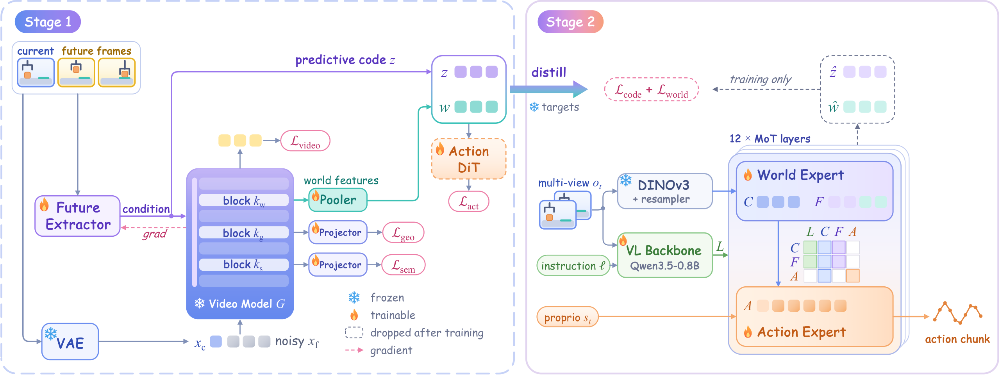
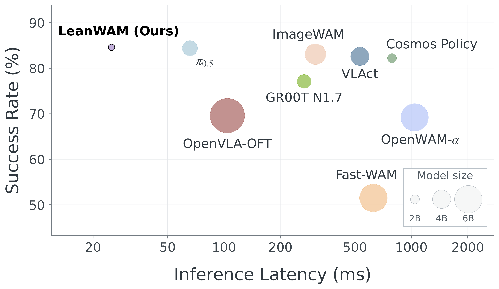
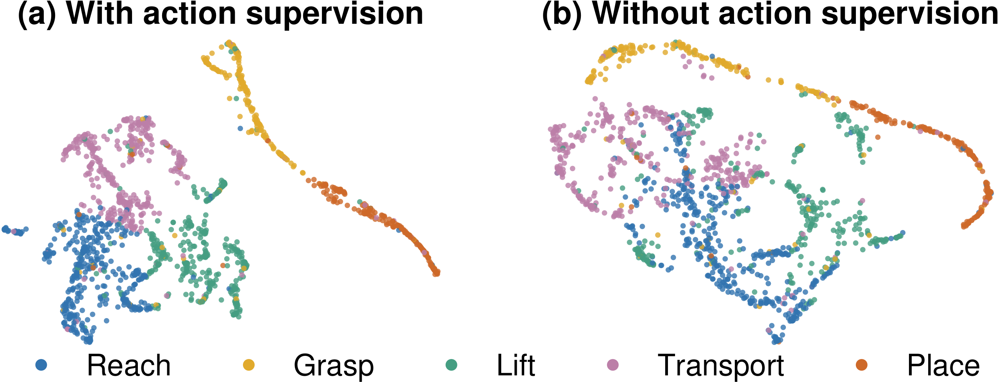
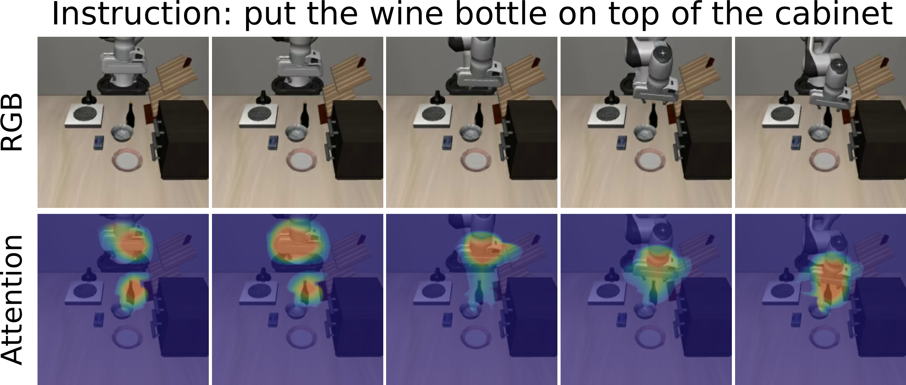

Extract a compact future
A Future Extractor compresses observed transitions into 32 predictive tokens, shaped by action, RGB, semantic, and geometric supervision. A compact readout of the frozen generator provides complementary world tokens.
The idea
Transfer the priors of a frozen video generator into a compact policy through two stages of training.

A Future Extractor compresses observed transitions into 32 predictive tokens, shaped by action, RGB, semantic, and geometric supervision. A compact readout of the frozen generator provides complementary world tokens.
The policy learns to predict both representations from current observations while generating actions. At inference, the backbone and World Expert run once, and only the Action Expert iterates.
Abstract
World action models (WAMs) typically adapt large pretrained video generators to jointly predict future observations and robot actions, incurring substantial training and deployment costs. However, it remains unclear which future representations a policy actually needs and how compactly they can be represented. Our probing study shows that complementary future representations can be compressed into a few tokens while retaining most of their action-decoding performance. Motivated by this finding, we introduce LeanWAM, a latent WAM that transfers video priors from a frozen video generator to a lightweight policy via two-stage training. In the first stage, a Future Extractor compresses observed transitions into 32 predictive tokens. These tokens condition the frozen generator and are jointly shaped by action, RGB, semantic, and geometric supervision, while a compact readout of the generator's hidden states supplies complementary world tokens. The second stage distills both representations into the policy, which learns to predict them from current observations while generating actions. With 1.4B parameters and no large-scale embodied pretraining, LeanWAM outperforms strong vision-language-action (VLA) and WAM baselines on LIBERO, LIBERO-Plus, and RoboTwin 2.0. It predicts an action chunk in 25.1 ms on an A100 GPU, 12.3–41.5× faster than representative WAMs. These results demonstrate that compact predictive supervision can transfer video priors to robust and efficient control.
Performance & efficiency
LeanWAM combines strong success rates with low inference latency, without large-scale embodied pretraining.
25.1 ms per action chunk, measured on an A100 at batch size 1. The deployed policy has 1.4B parameters and renders no future video.

Benchmark results
Success rates (%) reported in the paper. Select a benchmark to explore the full comparison.
Four 10-task suites, with 500 evaluation episodes per suite. A single model is trained jointly on all four suites.
| Method | Size | PT | Spatial | Object | Goal | Long | Avg. |
|---|---|---|---|---|---|---|---|
| Vision-language-action models | |||||||
| OpenVLA-OFT | 7.5B | ✓ | 97.6 | 98.4 | 97.9 | 94.5 | 97.1 |
| π₀.₅ | 3.3B | ✓ | 98.8 | 98.2 | 98.0 | 92.4 | 96.9 |
| GR00T N1.7 | 3B | ✓ | 97.7 | 98.5 | 97.5 | 94.4 | 97.0 |
| LAPA | 7B | ✓ | 73.8 | 74.6 | 58.8 | 55.4 | 65.7 |
| UniVLA | 7B | ✓ | 96.5 | 96.8 | 95.6 | 92.0 | 95.2 |
| VLA-JEPA | 2.3B | ✓ | 96.2 | 99.6 | 97.2 | 95.8 | 97.2 |
| StarVLA-π | 7.8B | × | 98.8 | 99.6 | 95.8 | 88.4 | 95.7 |
| World action models | |||||||
| Fast-WAM | 6B | × | 98.2 | 100.0 | 97.0 | 95.2 | 97.6 |
| JEPA-WAM | 1.3B | × | 95.6 | 99.4 | 97.2 | 94.6 | 96.7 |
| Motus | 8B | ✓ | 96.8 | 99.8 | 96.6 | 97.6 | 97.7 |
| LeanWAM (ours) | 1.4B | × | 98.4 | 99.4 | 97.8 | 98.0 | 98.4 |
Scroll horizontally to see all columns →
Bold: best. Underline: second best. PT: large-scale embodied pretraining. Size: number of parameters.
Zero-shot evaluation over all 10,030 episodes and seven perturbation types. LeanWAM uses the LIBERO-trained checkpoint without further training.
| Method | Size | PT | Latency (ms) | Camera | Robot | Language | Light | Background | Noise | Layout | Total |
|---|---|---|---|---|---|---|---|---|---|---|---|
| Vision-language-action models | |||||||||||
| OpenVLA-OFT | 7.5B | ✓ | 104.2 | 56.4 | 31.9 | 79.5 | 88.7 | 93.3 | 75.8 | 74.2 | 69.6 |
| π₀ | 3.3B | ✓ | – | 13.8 | 6.0 | 58.8 | 85.0 | 81.4 | 79.0 | 68.9 | 53.6 |
| π₀-FAST | 3B | ✓ | – | 65.1 | 21.6 | 61.0 | 73.2 | 73.2 | 74.4 | 68.8 | 61.6 |
| π₀.₅ | 3.3B | ✓ | 65.8 | 78.4 | 73.6 | 80.8 | 96.2 | 94.1 | 89.0 | 84.5 | 84.4 |
| VLA-JEPA | 2.3B | ✓ | – | 63.3 | 67.1 | 85.4 | 95.6 | 93.6 | 66.3 | 85.1 | 79.5 |
| StarVLA | 4B | × | – | 52.5 | 49.8 | 88.5 | 95.7 | 95.7 | 73.0 | 76.9 | 74.1 |
| VLAct | 4B | ✓ | 531.4 | 73.9 | 68.4 | 81.5 | 96.7 | 96.7 | 86.0 | 83.3 | 82.6 |
| World action models | |||||||||||
| Fast-WAM | 6B | × | 627.1 | 16.4 | 44.5 | 68.9 | 78.2 | 53.7 | 37.7 | 60.7 | 51.5 |
| OpenWAM-α | 6B | ✓ | 1040.3 | 33.8 | 76.1 | 88.0 | 97.0 | 87.1 | 39.8 | 77.5 | 69.2 |
| 4D-WAM | 6B | × | – | 45.2 | 64.3 | 90.6 | 94.3 | 57.7 | 69.1 | 79.2 | 71.0 |
| ST-WAM | 7B | × | – | 55.4 | 60.1 | 79.3 | 93.0 | 74.2 | 79.5 | 74.3 | 72.8 |
| Faster-WAM | 5B | × | – | 67.9 | 49.0 | 92.1 | 94.3 | 57.0 | 82.3 | 82.7 | 75.0 |
| Cosmos Policy | 2B | × | 788.2 | 75.8 | 63.3 | 81.7 | 96.5 | 88.9 | 92.7 | 82.2 | 82.2 |
| JEPA-WAM | 1.3B | × | – | 79.2 | 59.2 | 68.2 | 93.3 | 94.6 | 83.6 | 76.1 | 79.2 |
| ImageWAM | 4.5B | × | 307.6 | 80.8 | 50.3 | 91.4 | 98.1 | 85.5 | 93.8 | 80.5 | 83.1 |
| ABot-M0.5 | 5B | ✓ | – | 70.5 | 87.4 | 88.6 | 94.0 | 89.7 | 75.5 | 85.2 | 83.4 |
| Being-H0.7 | 3B | ✓ | – | 82.0 | 59.0 | 82.8 | 97.8 | 90.0 | 93.5 | 88.5 | 82.1 |
| LeanWAM (ours) | 1.4B | × | 25.1 | 90.9 | 61.8 | 81.3 | 96.4 | 88.4 | 97.1 | 79.8 | 84.6 |
Scroll horizontally to see all columns →
Bold: best. Underline: second best. PT: large-scale embodied pretraining. Latency: milliseconds per action chunk on an A100, batch size 1. An en dash indicates unmeasured latency. Total follows the benchmark's overall aggregation, not an unweighted mean of the seven columns.
The paper's 10 selected bimanual tasks, with 100 episodes per task in each setting. The model is jointly trained on clean and randomized demonstrations.
| Method | Clean | Randomized | Avg. |
|---|---|---|---|
| X-VLA | 76.4 | 73.6 | 75.0 |
| π₀.₅ | 83.5 | 80.3 | 81.9 |
| Motus | 89.5 | 89.4 | 89.5 |
| Fast-WAM | 89.3 | 89.6 | 89.5 |
| GigaWorld-Policy | 89.2 | 87.8 | 88.5 |
| LingBot-VA | 89.9 | 87.4 | 88.7 |
| LeanWAM (ours) | 93.9 | 92.3 | 93.1 |
Scroll horizontally to see all columns →
Bold: best. Underline: second best. Success rates averaged over the selected 10 tasks. Clean and Randomized refer to the two evaluation settings.
Baseline success rates are from the corresponding papers or public benchmark reports. Latencies were measured separately for representative methods on the same A100.
Inside the representation
A closer look at behavior structure and the regions selected by the Future Extractor.
Action supervision makes behavior neighborhoods more coherent. Without it, Reach, Lift, and Transport intermix, even though Grasp and Place remain separated.

70.7%→78.5%
Measured with 15 cosine-nearest neighbors from other tasks in the original 1,024-dimensional code space, macro-averaged over behaviors. This supports the structure beyond the 2D visualization.
In this demonstration, the queries concentrate on the gripper and target wine bottle, with little attention to the table, background, or unrelated objects.

Build on this work
If you find LeanWAM useful in your research, please consider citing our paper.
The BibTeX citation will be available with the arXiv release.